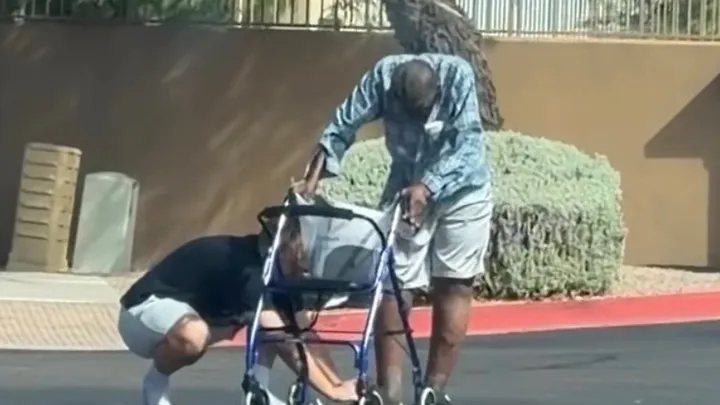

482 People Showed Up for Mr. Roy

There's a campaign on Boost Board right now that is 97% of the way to its goal. $21,312 raised out of $22,000. Four hundred and eighty-two donors. It's called Care for Mr. Roy in His Time of Need.
Mr. Roy is an elderly man who needs support. That's most of what the campaign says. A photo. A short story. Someone who cares about him enough to ask strangers for help.
It worked.
Four hundred and eighty-two people who said yes
Four hundred and eighty-two donors. Each one made a small decision to help someone they'd never meet. One person told another, who told another, and so on, until nearly five hundred people had quietly shown up for an elderly man they had no obligation to care about.
That's what kindness looks like when it moves through a community — not dramatic, not loud, just one yes at a time.
The campaigns still waiting
Most campaigns on Boost Board haven't had that yet. Most are still at a handful of donors, or zero. The need is just as real. The story is just as true. What's missing is the same thing Mr. Roy had: a few people willing to pass it along.
That starts with one share. One person saying: this one. I want this one to get its first yes.
Mr. Roy's campaign is nearly done. The ones still waiting just need the same quiet kindness his had.